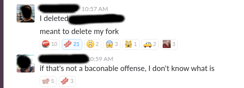

Git
A brief introduction
Olly Shaw
Audience

Outline
- What and Why
- Getting started
- Remotes
- Getting out of trouble
- Branching and Merging
What is Git?
Git is a version control system that is used for software development and other version control tasks. As a distributed revision control system it is aimed at speed, data integrity, and support for distributed, non-linear workflows.
What is Git?

Why Git?
- Cross platform
- Open
- Fast and lightweight
- Distributed
- Becoming the de facto standard

Why(not) Git?
It's a bit confusing?
Pro Tip: Learn Git on the command line
A New Hope
Some simple first steps
Initialise a repository
git init
Basic revision control
git add your.file
git commit -m "your message" your.file
See what's going on
git status
git diff
git log
Alias
git config --global alias.st status
Simple Flow
Pro Tips:
- Always look what's in the staging area before you commit
- Use .gitignore
- Use alias for common commands
Dealing with remotes
Add a file system remote
git init --bare remote_location
Add, Remove, Rename
git remote -v
git remote add remote_name remote_location
git remote remove remote_name remote_location
git remote rename old_name new_name
Fetch, pull, push
git fetch remote_name
git pull remote_name branch_name
git push remote_name branch_name
git push --set-upstream remote_name branch_name
Pro Tip: Don't delete a shared repo
Pro Tip: Never rebase commits that have left your local repo
The Empire strikes back
Getting out of trouble
Undoing your local changes
git checkout your.file
Revert
git revert
Reset
git reset your.file
git reset --hard SHA1
git reset --soft SHA1
git reset --mixed SHA1
Stash
git stash
git stash pop
Pro Tips:
- There's probably a way out with 'reflog', but try not to need it!
- Never force push to a shared repo
The Return of the Jedi
Branches, Pull Requests and Merges
Branching
git checkout -b your-new-branch
git checkout your-existing-branch
git branch -v
View your branches
git log --graph --decorate --abbrev-commit
Merge a branch
git merge branch_to_merge
Branch based workflow
Pro Tips:
- Read a pull request from the bottom up
- Use forks to contribute, branches to collaborate
- Don't merge your own code
Further Reading
- Code School (Free Git Course) www.codeschool.com
- Pro Git https://git-scm.com/book/en/v2
- https://www.atlassian.com/git/tutorials/learn-git-with-bitbucket-cloud
- Practice!